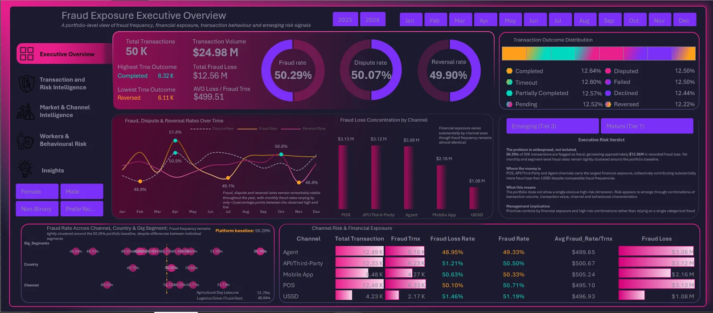
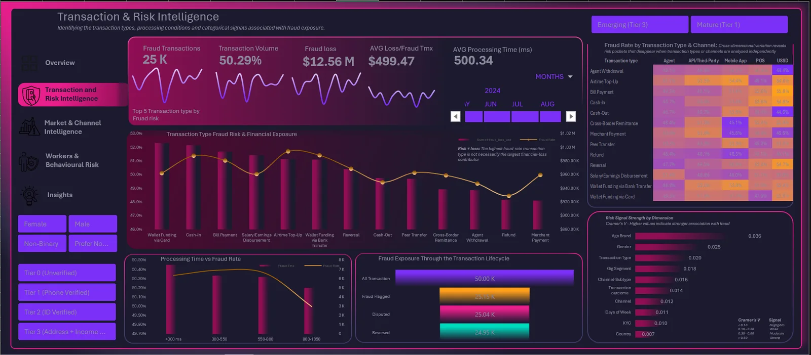
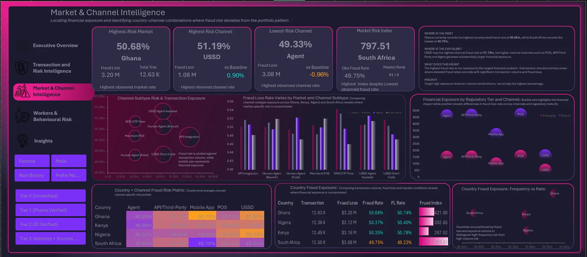

The problem the brief set
I built this for the Onyx Data #DataDNA monthly challenge (August 2026). The PayPesa scenario is fictional and the dataset is synthetic: 50,000 transactions from 5,000 gig workers across Nigeria, Kenya, Ghana and South Africa, in USD, spanning 2023-01-01 to 2024-12-31. I say that everywhere on these pages, because the honest reading of any generated dataset is patterns within the data, not claims about real African fintech fraud.
My first look at this data was alarming. Fraud, dispute and reversal flags all sat at about 50%, across 50,000 transactions. On its face that is a platform in full fraud crisis, and the natural move is to start hunting for the pocket where it comes from.
The brief pushed in the same direction with six specific claims: USSD carries 2.3 times the app fraud rate, Nigeria and Kenya drive 70% of fraud volume, accounts under 90 days defraud three times as often, market traders dispute most, velocity scores predict fraud, and month-ends spike cash-outs and reversals.
Before trusting any of it, I did something that changed the whole project: I checked the data against its own documentation. It did not match, in at least five places. So instead of a fraud-hunt, this became a validation-first investigation: prove what the data actually is, test every claim formally, and only report what survives.
Testing the brief's six claims
This is the table I would want to read first: each claim from the brief, what I found when I tested it, and my verdict. I ran descriptive cuts first, then chi-square with Cramér's V for the categorical ones and point-biserial correlation for the continuous ones. The honest headline is that all six came back flat or mis-stated, and proving that carefully is the most useful thing this project did.
| The brief claimed | What I found in the data | My verdict |
|---|---|---|
| USSD shows 2.3x higher fraud rate than the app channel | USSD runs 51.19% fraud against Mobile App at 50.33%. A 0.9 point gap, not 2.3 times. USSD does lead one ranking that matters: fraud loss per dollar processed, at 51.46 cents. | Does not hold on frequency. USSD's real distinction is exposure per dollar, which is a different risk conversation. |
| Nigeria and Kenya drive 70% of fraud volume | The four markets hold 12.4K to 12.6K transactions each; Nigeria and Kenya together are 49.7% of volume, fraud included. There is no 70%. | Does not hold. Volume is almost perfectly balanced across the four markets. |
| Accounts under 90 days defraud three times as often | Under-90-day accounts run 51.06% fraud against 50.25% for the rest. Under one percentage point. | Does not hold. New-account risk in this data is noise, not a signal. |
| Market traders have the highest dispute rate | Informal Vendor is highest at 53.34%, Delivery Rider lowest at 49.02%. Market Trader sits mid-pack. The overall effect size stays negligible (Cramér's V 0.016). | Does not hold as stated, though the 4.3 point top-to-bottom segment spread is the widest single-dimension gap I found and worth a closer look. |
| High velocity scores correlate with fraud | Point-biserial correlation between velocity score and the fraud flag: -0.001. Processing time: -0.002. | Does not hold. The behavioural scores carry no fraud signal at all in this data. |
| Month-ends spike cash-out and reversal rates | Month-end transactions run 51.24% fraud against 50.26% otherwise, on 1,575 month-end rows. Inside sampling noise. | Does not hold. The spike the brief promised is about one point, which is what chance produces. |
And one finding from the same exercise that sits above all of it: the shipped data dictionary does not describe the shipped data. It documents fraud flags at 7% (observed 50.29%), disputes at 5% (observed 50.07%), reversals at 8% (observed 49.90%), four outcome categories (observed eight, all near 12.5%), four gig segments (the worker table carries 15), and lowercase channel labels (the data uses Agent, API/Third-Party, Mobile App, POS, USSD). I profiled the CSVs directly and worked from what is actually in them.
The short answer
With the brief's claims settled, here is what the data does say. Fraud frequency is genuinely flat: every one of the ten categorical dimensions I tested returns a Cramér's V below 0.04, deep in negligible territory, and the two continuous risk scores correlate with the fraud flag at essentially zero. The only places the pattern moves at all are two-way combinations: Ghana with Mobile App runs 52.72% fraud on 2,094 transactions and Nigeria with USSD runs 52.23% on 1,030, roughly two points above the 50.29% baseline, which is the strongest relative signal in the dataset while still being modest in absolute terms. Financial exposure tells its own story: POS, API/Third-Party and Agent carry the largest absolute losses ($3.08M to $3.13M each) purely because they carry the volume, while USSD has the worst loss rate per dollar. And the platform's own risk scores fail their audit: South Africa carries the highest Market Fraud Index (797.51) despite the lowest observed fraud rate (49.75%), and the worker risk score correlates with actual fraud losses at r = -0.003. My conclusion for a risk team: on this data, frequency-based targeting has nothing to grab, exposure and the two-way lens are where the signal lives, and the stated risk indicators need independent validation before anyone steers by them.

Numbers at a glance
Where they come from: the headline KPIs, channel table and market cards are read off my dashboard pages, and the statistical results (Cramér's V values, correlations, concentration and tenure cuts) come from my own re-run of the tests on the shipped CSV files, which is the same thing my dashboard page two visualises.
How to read each number
| Number | How I got it | How to read it |
|---|---|---|
| 50.29% fraud rate | Fraud-flagged transactions over all 50,000 | Documented at 7%. The flags behave like coin flips in this data, which is itself the first finding. |
| $12.56M fraud loss | Fraud loss summed over flagged transactions | An average of $499.47 per fraud event, generated from a heavy-tailed distribution, so per-event severity varies widely. |
| Cramér's V below 0.04, ten times | Chi-square test of independence for each categorical dimension against the fraud flag, converted to an effect size | On a scale where 0.10 is the floor for even a weak effect, this is a formally proven null. No single category explains who gets flagged. |
| 52.72% at Ghana x Mobile App | Fraud rate inside that channel-by-market cell, 2,094 transactions | The largest cell deviation, about 2.4 points above baseline. Suggestive, not conclusive; with twenty cells tested some elevation is expected by chance. |
| 51.46% USSD loss rate | USSD fraud loss over USSD volume | The worst exposure per dollar despite the smallest absolute loss ($1.08M), because USSD carries a fifth of the transaction volume. |
| r = -0.003 | Pearson correlation between each worker's risk score and that worker's actual fraud loss | The platform's worker-level risk score has no relationship with observed fraud behaviour. |
| 20.4% of losses from the top 10% of workers | Workers ranked by total fraud loss, share of the $12.56M total | About twice their fair share, but far from the 80/20 concentration a watchlist strategy assumes. |
| 797.51 South Africa Fraud Index | The market table's own stated index, read off my page-three card | The highest of four markets, attached to the lowest observed fraud rate (49.75%). The label does not track the data. |
What I found
The 50% crisis was a documentation failure before it was a fraud finding
Can the headline numbers be trusted at all?
Fraud, dispute and reversal flags all sit at 49.9% to 50.3%. The dictionary documents 7%, 5% and 8%. The eight transaction outcomes each hold 12.2% to 12.6% of the file, which is what a near-uniform random draw produces, not what a risk process produces.
I could have reported the crisis. Instead I audited: flag rates against the dictionary, outcome categories against the four the dictionary promised, channel labels against the documented list, gig segments against four (the worker table carries 15), and the risk score scale against its own generator spec. At least five fields do not match their documentation.
That audit reframed everything downstream. The ~50% rates are structurally consistent with coin-flip generation, and the brief's six risk claims were tested against the data as it is, not the data as documented. Several of the claims, like the 2.3x USSD rate and 3x new-account risk, probably came from the same documentation the data ignores.
What it means. An audit of the data against its own documentation is not overhead. Here it redirected the entire analysis before a single finding was published.
Audit any new data source against its own documentation before building on it, and report the mismatches as findings.
The formally proven null: no single dimension explains the flags
Does any category the platform tracks predict fraud?
I tested ten dimensions against the fraud flag: channel, country, gig segment, KYC tier, age band, gender, transaction type, channel subtype, transaction outcome and day of week. My page-two leaderboard shows every Cramér's V, from Age Band at 0.036 down to Country at 0.007. All of them are deep inside the negligible band on a scale where 0.10 is the floor even for a weak effect.
I applied the caveat that matters at this sample size: with n = 50,000, chi-square returns a significant p-value for almost any non-zero difference, so significance alone proves nothing. Every result was paired with its effect size, and every effect size is negligible. My own re-run of the tests on the raw CSVs lands in the same place, with even smaller values.
The continuous candidates failed too. Velocity score against the fraud flag correlates at -0.001 and processing time at -0.002. The behavioural scores the platform records carry no fraud signal whatsoever in this data.
What it means. A null result, proven with effect sizes rather than impressions, is a real finding. It tells a risk team that frequency-based targeting has nothing to grab here.
Stop looking for a single fraud pocket in this data. The search has been done formally and it came back empty.

When one dimension says nothing, two dimensions whisper
Can a pattern hide from every single-dimension test?
A flat result on every marginal test does not rule out a pattern living in a combination, because no one-dimensional cut can see it. So I crossed channel with market and read the twenty cells against the 50.29% baseline.
Two cells stand above the rest: Ghana with Mobile App at 52.72% on 2,094 transactions and Nigeria with USSD at 52.23% on 1,030. A few others sit about a point high, Ghana with USSD at 51.91% and Nigeria with POS at 51.37%, while the lowest cell, South Africa with Mobile App, sits at 48.10%. Every one-dimension test returned nothing, and the two-way cut is where the only movement in this dataset lives.
I want to be precise about the strength here. A two-point deviation on a couple of thousand rows is suggestive, not conclusive, and with twenty cells tested some elevation is expected from chance alone. What makes it worth reporting is not its size but its exclusivity: it is the only relative signal anywhere in the frequency data, which is exactly why a risk review should look at channel-by-market intersections rather than either dimension alone.
What it means. Interaction analysis earns its place when marginals are flat. Here it is the only lens that moves at all, even though the movement is modest.
Review channel controls at the channel-by-market intersection, and treat the elevated cells as candidates for a targeted look, not proven hotspots.

Frequency and exposure rank differently, and only one of them should set priorities
Where does the money actually go?
USSD has the highest fraud rate of any channel at 51.19% and the highest loss rate per dollar at 51.46 cents. It also has the smallest absolute loss, $1.08M, because it carries 4,229 transactions while Agent, POS and API/Third-Party each carry 12,300 or more.
The absolute-loss ranking inverts that: POS $3.13M, API/Third-Party $3.12M, Agent $3.08M, Mobile App $2.16M, USSD $1.08M. Those three big channels lead the absolute table mostly by being big, which is why I computed fraud loss rate (loss over total volume) throughout, so a channel is not punished or pardoned for its size.
The same discipline settles the worker question. The top 10% of workers by loss hold 20.35% of the $12.56M, about twice their fair share but nowhere near the concentration a watchlist strategy assumes. Fraud loss per event is drawn from a heavy-tailed distribution, so a few big single events are expected from randomness alone; the honest read is that exposure is broad, and controls have to operate across the transaction base rather than chase a small group.
What it means. Frequency, severity and concentration are three different questions. Ranking by the wrong one sends the control budget to the wrong place.
Prioritise controls by financial exposure per dollar, and design them for a dispersed risk base, not a fraud pocket.
The platform's own risk scores fail their audit
Can the stated risk indicators be trusted to find risk?
South Africa carries the highest Market Fraud Index of the four markets, 797.51, and the lowest observed fraud rate, 49.75%, against Ghana's 50.68% with an index of 421.60. The label ranks the markets almost opposite to what the transactions show.
At worker level I checked it directly: the correlation between each worker's risk score and that worker's actual fraud loss is r = -0.003, and against fraud count r = -0.009. Whatever the score measures, it is not what the transaction data shows.
The channel table fails the same audit: its reference fraud-rate field is documented as a 0.02 to 0.15 rate, but the shipped values read 484 to 675, which is not a rate on any scale. Three stated risk indicators, market index, worker score and channel reference rate, and none of them tracks observed behaviour in this data.
What it means. A risk score that does not correlate with outcomes is decoration. Before steering controls by any stated indicator, check it against the outcomes it claims to predict.
Treat the Market Fraud Index, worker risk scores and channel reference rates as unverified until they are re-derived from observed outcomes.
What I would do next
Set controls by financial exposure, not fraud frequency
High priority- Evidence
- USSD leads fraud rate (51.19%) and loss rate (51.46 cents per dollar) but holds the smallest absolute loss ($1.08M); POS, API/Third-Party and Agent hold $3.1M each on volume alone.
- What to do
- Rank control investments by fraud loss rate per dollar and absolute exposure together, and stop ranking by event frequency alone.
- What I expect
- Puts the control budget where the dollars are, not where the percentages are.
Review channel controls at the channel-by-market intersection
High priority- Evidence
- Every one-dimensional test is negligible, while Ghana x Mobile App (52.72%, n=2,094) and Nigeria x USSD (52.23%, n=1,030) sit about two points above baseline.
- What to do
- Make the channel-plus-market pair the unit of review, and validate the elevated cells against a held-out time window before acting.
- What I expect
- Aims the only frequency signal that exists in this data at the exact place it lives.
Re-derive the stated risk indicators from observed outcomes
High priority- Evidence
- South Africa's Fraud Index is the highest of four against the lowest observed rate; worker risk score vs actual loss correlates at r = -0.003; channel reference rates read 484 to 675 on a field documented as 0.02 to 0.15.
- What to do
- Rebuild the market index, worker score and channel reference rates from transaction outcomes, or publish them as unvalidated until they are.
- What I expect
- Stops decisions being steered by labels that do not track the data.
Do not build a worker watchlist from loss concentration
Medium priority- Evidence
- The top 10% of workers hold 20.35% of losses, twice their fair share but far from 80/20, and per-event loss is heavy-tailed by construction.
- What to do
- Design controls for broad coverage across the worker base, and use persistence across multiple fraud events (not single large losses) to flag individuals.
- What I expect
- Avoids a small-population strategy that misses most of the exposure.
Investigate the segment spread before trusting it
Medium priority- Evidence
- Dispute rates run 49.02% (Delivery Rider) to 53.34% (Informal Vendor), the widest single-dimension gap in the data, though the overall effect size stays negligible (V = 0.016).
- What to do
- Re-test the segment spread on fresh data with a multiple-comparisons correction before acting on it.
- What I expect
- Either confirms the one marginal signal worth having, or retires it cleanly.
Run the documentation audit as a standing step
Low priority- Evidence
- At least five fields in this dataset do not match their own documentation, including the three flag rates the whole crisis narrative rested on.
- What to do
- Add a documentation-versus-observed audit to the intake checklist for any new dataset.
- What I expect
- Catches story-corrupting mismatches before they reach a dashboard.
What this can't tell you
The dataset is synthetic, built for the challenge. Every finding describes patterns in this specific file, not real African digital-wallet fraud.
The ~50% flag rates and near-uniform outcomes are consistent with the generator having applied no correlations at all. A platform with genuinely random flags cannot yield fraud drivers, no matter how hard anyone tests.
Cramér's V thresholds (0.10 / 0.30 / 0.50) are conventions, applied here alongside percentage-point differences and sample size, not as a rigid cutoff.
The elevated channel-by-market cells are two points above baseline on one to two thousand rows. Suggestive, not conclusive, and not cross-validated on a held-out window. I say that on the page rather than dressing it up.
One honest note on my own dashboard: the page-four worker table lists workers by name, and this dataset reuses common names across different worker ids, so each row there pools several distinct people. I treat that table as name groups, and I ran the worker-level checks in these pages on worker ids instead.
My earlier project writeup quoted the three channel-by-market spikes as roughly ten points above baseline (60.79%, 60.71%, 60.61%). Checking the raw data directly, those cells read 50.79%, 50.71% and 50.61%, about half a point above baseline, and the largest genuine deviations are the Ghana x Mobile App and Nigeria x USSD cells at one to two points. These pages use the corrected numbers.